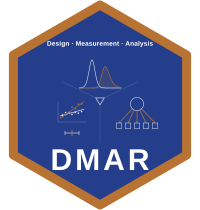

Tucker's Congruence Coefficients Between the Factors of Two Solutions
Source:R/factor_congruence.R
factor_congruence.RdCompares the factors of two solutions for the same items by Tucker's
congruence coefficient, after matching each factor of one solution with
a factor of the other. The two solutions can come from two samples, two
rotations, two estimators, or two factor counts, and each can be a
loading matrix, a table from fa_exploratory(), or a
lavaan fit. The factors of y are paired one to one with
those of x by the assignment that maximizes the total absolute
congruence, and a factor whose match is negative is reflected. Each
factor is reported with its coefficient and with the largest absolute
coefficient it has with any other factor of the other solution, so that
a close competitor is in view, and the full matrix of coefficients
travels with the table.
Arguments
- x
The reference solution, in one of three forms. A numeric matrix of loadings with items in rows and factors in columns (a numeric vector is one factor, and a
"loadings"object, such aspsych::fa()$loadingsorfactanal()$loadings, is used as its matrix). A table returned byfa_exploratory(), whose standardized pattern loadings and factor correlations are used. Or a single-group, single-level lavaan fit, such asfa_confirmatory(output = "fit"),lavaan::cfa(), orlavaan::efa(output = "lavaan"), whose standardized loadings and model implied factor correlations are used. A table of results fromfa_confirmatory(),cfa_1(), orcfa_2()is not a fit and is refused with a pointer tooutput = "fit". Items are named by the row names of a matrix, the names of a vector, or the item names of a fit.- y
The solution compared with
x, in any of the same forms. Its factors are matched to those ofx.- match
How the factors are paired:
"congruence"(default), the one-to-one assignment that maximizes the sum of the absolute coefficients, with each matched factor ofyreflected when its coefficient is negative; or"order", column j ofywith column j ofx, signed and never reflected, for solutions whose factors are already aligned. See Details.- loadings
"pattern"(default) compares columns of the pattern matrix, the loadings themselves;"structure"compares columns of the structure matrix, the pattern times the factor correlations, the correlations of the items with the factors. The structure needs the factor correlations, so it is available forfa_exploratory()tables and lavaan fits, not for a matrix; a matrix is used as supplied, and for a structure comparison of matrices the structure matrices themselves are passed under the default.
Value
A dmar_tbl data frame (classes
dmar_factor_congruence, dmar_tbl, and
data.frame) with one row per factor of x, in the order
of x, followed by a row for each factor of y left
without a partner. Its columns are factor_x and
factor_y, the names of the paired factors (NA for a
factor without a partner); congruence, the coefficient of the
pair after reflection (signed under match = "order";
NA without a partner); reflected, whether the factor of
y was reflected to match (NA without a partner); and
next_largest, the largest absolute coefficient between the
row's factor (its factor of x, or its factor of y in
the row of a factor of y without a partner) and any factor of
the other solution other than its partner (NA when there is
none). The attributes are congruence_matrix, the signed
coefficients of every factor of x (rows) with every factor of
y (columns), before matching or reflection;
loadings_aligned, the loadings of y that were compared,
with the items in the order of x and the factors in the order
of their partners, reflected where matched with a reflection,
followed by any factor without a partner; Phi_aligned, the
factor correlations of y in that order, \(D \Phi D\) with
\(D\) the diagonal matrix of the reflections, when y carries
them (absent for a matrix); items, the item names in the order
of x (their positions when neither solution names its items);
match and loadings, the arguments; and inputs, a
list naming the kind of each input ("matrix",
"fa_exploratory", or "lavaan") and whether the items
were aligned by name or by position. A measured_terms attribute
names the two columns of coefficients, so the display prints a
coefficient of 1 as 1.000 beside the others (see
dmar_tbl). The print method states the coefficient, the
counts, and the matching rule above and below the table, and prints
the full matrix, to the decimal places of the table
(print(x, digits = 5) shows five in both). tidy() gives
one row per row of the table, with term
"factor_x | factor_y"
("(none)" standing in for the missing name of a factor without
a partner, as in "X3 | (none)"), estimate (the
coefficient), reflected, and next_largest;
glance() gives n_items, n_factors_x,
n_factors_y, n_matched, match, loadings,
and mean_congruence, the mean coefficient over the matched
pairs.
Details
The coefficient. For two columns of loadings \(a\) and
\(b\) on the same \(n\) items, Tucker's congruence coefficient is
$$\phi(a, b) = \frac{\sum_{i=1}^{n} a_i b_i}
{\sqrt{\sum_{i=1}^{n} a_i^2 \sum_{i=1}^{n} b_i^2}},$$
the cosine of the angle between the two columns (Lorenzo-Seva & ten
Berge, 2006, eq. 1). Burt suggested it in 1948, and it became known as
Tucker's congruence coefficient through Tucker's report of 1951
(Lorenzo-Seva & ten Berge, 2006, p. 57). It is not the Pearson
correlation of the two columns, which would subtract their means first.
The coefficient is unchanged when a column is multiplied by a positive
constant, so it compares the pattern of the loadings rather than their
size. It changes when a constant is added, as it should, since
loadings of .4, .4, and 0 and loadings of .1, .1, and \(-.3\) differ
by a constant and are read as different factors (their coefficient is
.43, their correlation 1). It is unchanged when an item's sign is
reversed in both solutions, and it reverses its sign when one of the
two factors is reflected (Lorenzo-Seva & ten Berge, 2006,
pp. 57–58). The columns are usually those of the pattern matrix,
though those of the structure matrix can be compared as well (p. 57).
In an oblique solution the two differ, and loadings chooses
between them; in an orthogonal one they coincide.
Rescaling a whole column leaves the coefficient alone, but rescaling an item does not, and an item's loadings in the original metric scale with its standard deviation, which differs from sample to sample. A fit is therefore read in the standardized metric. A matrix is used as supplied, so two matrices should be in the same metric.
Why matching is part of the comparison. The order in which a
solution lists its factors, and the sign of each, are arbitrary: a
rotation can list the verbal factor first in one sample and second in
another, and reflecting a factor (reversing the signs of its loadings
and of its correlations with the other factors) gives an equivalent
solution. Before two solutions can be compared, each factor of
y has to be paired with a factor of x. Under
match = "congruence" the pairing is the one-to-one assignment
that maximizes the sum of the absolute coefficients over the pairs,
found by the Hungarian method (Kuhn, 1955), and each matched factor of
y whose coefficient is negative is then reflected, so the
reported coefficients are not negative. The assignment is optimal over
the whole matrix rather than factor by factor: pairing each factor of
x with its best factor of y can give two factors the same
partner, and taking the largest coefficient first and then the largest
of what remains can give a lower total. Assignments whose totals agree
to within rounding are decided in favor of the listed order: the first
factor of x takes the earliest factor of y it can, then
the second, and so on. Under match = "order" column j of
y is paired with column j of x, the coefficients
keep their signs, and nothing is reflected; this suits solutions whose
factors are aligned by construction, such as two confirmatory fits of
one model, and a negative coefficient then shows a factor whose
direction differs.
When the two solutions have different numbers of factors, as many pairs
are formed as the smaller solution has factors, and each surplus factor
of the larger solution has a row with no partner and no coefficient.
Its next_largest shows how close it comes to a factor already
taken, which is how a factor of one solution that splits into two in
the other shows itself.
Items are aligned by name when both solutions name them, and the two sets of items must then be the same; otherwise they are aligned by position, and the two numbers of items must be the same.
The matched value is the largest of several candidates.
Matching chooses for each factor the partner it agrees with best, so a
matched coefficient is a maximum, larger on average than the
coefficient of a pairing fixed in advance. The next_largest
column gives each factor's strongest competitor, the largest absolute
coefficient it has with any factor of the other solution other than its
partner. A matched value close to its next_largest marks a
pairing that a small change in the data could reverse, and the
congruence_matrix attribute, printed under the table, shows every
candidate.
Chance congruence is not zero. Two columns of loadings unrelated to each other still have a coefficient different from zero. For two unrelated factors whose loadings point in random directions, Korth and Tucker (1975, p. 366) give the expected squared coefficient as \(1/n\) for \(n\) items (for six items a root mean square of about .41). Matching raises the chance values, and rotating the two solutions toward each other raises them further. Korth and Tucker gave each of two unrelated patterns an orthogonal transformation chosen to make the two agree as closely as possible (pp. 364–365); for two factors on ten items, the first and largest coefficient after that transformation was typically about .64 (their Table 4, p. 368, a mean on the Fisher Z scale converted back). Reordering and reflecting factors are orthogonal transformations too, so for the same two patterns no coefficient this function reports exceeds that first coefficient. Columns whose loadings are all positive, as a general factor's often are, agree further by construction: two unrelated columns of loadings drawn independently and uniformly between 0 and 1 have a coefficient that approaches 3/4 as the number of items grows. A coefficient is therefore read against what unrelated solutions of the same shape would give, not against zero.
Reading the coefficient. Tucker declined in his 1951 report to name a value below 1 that would count as identity of two factors until experience with the coefficient had accumulated (Lorenzo-Seva & ten Berge, 2006, p. 58). Lorenzo-Seva and ten Berge (2006) asked 56 university professors who use exploratory factor analysis in their research to rate, on a five-point scale, the similarity of pairs of loading columns constructed to have coefficients from .62 to .97. The mean ratings tracked the coefficient closely (r = .974 between the coefficient and the mean rating), and the raters' mean judgments led the authors to read values from .85 to .94 as fair similarity and values above .95 as equality. The individual ratings varied widely, and they depended on the number of items and on the judges' research field; the authors concluded that a rule of thumb based on the judgment of a single researcher is hazardous (p. 61). Their study describes how analysts judged similarity, not a property of the coefficient, and the table reports the coefficient and applies no such reading.
What the function does not do. It rotates neither solution: it
compares them as they were rotated. Rotating one solution toward the
other before computing the coefficients, as is often done
(Lorenzo-Seva & ten Berge, 2006, p. 57), is a separate step. It reports
no standard error, interval, or test for the coefficients.
procrustes_phi() computes the same coefficient for one
pair of loading vectors that the user has already paired, with a
permutation p-value, and does no matching.
References
Korth, B., & Tucker, L. R. (1975). The distribution of chance congruence coefficients from simulated data. Psychometrika, 40(3), 361–372. doi:10.1007/BF02291763
Kuhn, H. W. (1955). The Hungarian method for the assignment problem. Naval Research Logistics Quarterly, 2(1–2), 83–97. doi:10.1002/nav.3800020109
Lorenzo-Seva, U., & ten Berge, J. M. F. (2006). Tucker's congruence coefficient as a meaningful index of factor similarity. Methodology, 2(2), 57–64. doi:10.1027/1614-2241.2.2.57
See also
procrustes_phi for the coefficient of one pair of
loading vectors with a permutation p-value,
fa_exploratory and fa_confirmatory for the
solutions compared, and dmar_tidiers for tidy()
and glance().
Other multivariate and latent variable methods:
average_variance_extracted(),
bifactor_indices(),
cfa_1(),
cfa_2(),
ci_bifactor_indices(),
ci_eigenvalue(),
common_method_adjusted_r(),
common_method_marker(),
common_method_single_factor(),
compare_sem(),
dmacs(),
ecvi(),
equivalence_rmsea(),
fa_bifactor(),
fa_confirmatory(),
fa_second_order(),
factor_scores(),
htmt(),
irt_grm(),
irt_information(),
measurement_alignment(),
measurement_invariance(),
procrustes_phi(),
sem_exact_fit_bootstrap(),
sem_fit_measures(),
sem_information_criteria(),
sem_residual_fit(),
simple_structure()
Author
Ken Kelley kkelley@nd.edu
Examples
items <- c("t1_visual_perception", "t2_cubes", "t4_lozenges",
"t6_paragraph_comprehension", "t7_sentence", "t9_word_meaning")
# Congruence compares loadings alone, so the two fits leave out the
# standard errors, tests, and intervals (point_estimates_only = TRUE).
oblimin <- fa_exploratory(holzinger_swineford, nfactors = 2, items = items,
seed = 113, point_estimates_only = TRUE)
geomin <- fa_exploratory(holzinger_swineford, nfactors = 2, items = items,
rotation = "geomin", seed = 113,
point_estimates_only = TRUE)
# The same two factors under two rotations, compared by their pattern
# loadings and then by their structure loadings.
factor_congruence(oblimin, geomin)
#> Tucker's congruence coefficients: 6 items; x has 2 factors, y has 2
#> x and y: fa_exploratory() tables (standardized pattern loadings)
#>
#> factor_x factor_y congruence reflected next_largest
#> f1 f1 0.999 FALSE 0.118
#> f2 f2 0.999 FALSE 0.025
#> (congruence: the coefficient of each pair, after reflection; reflected: whether the factor of y was reflected to match; next_largest: the largest absolute coefficient of the row's factor with any factor of the other solution other than its partner)
#>
#> Matching: the one-to-one assignment of y's factors to x's that maximizes the sum of the absolute coefficients; 2 pairs, 0 factors of y reflected.
#>
#> Congruence matrix (rows: the factors of x; columns: the factors of y; before matching and reflection):
#> f1 f2
#> f1 0.999 0.118
#> f2 0.025 0.999
factor_congruence(oblimin, geomin, loadings = "structure")
#> Tucker's congruence coefficients: 6 items; x has 2 factors, y has 2
#> x and y: fa_exploratory() tables (standardized structure loadings)
#>
#> factor_x factor_y congruence reflected next_largest
#> f1 f1 0.998 FALSE 0.639
#> f2 f2 1.000 FALSE 0.569
#> (congruence: the coefficient of each pair, after reflection; reflected: whether the factor of y was reflected to match; next_largest: the largest absolute coefficient of the row's factor with any factor of the other solution other than its partner)
#>
#> Matching: the one-to-one assignment of y's factors to x's that maximizes the sum of the absolute coefficients; 2 pairs, 0 factors of y reflected.
#>
#> Congruence matrix (rows: the factors of x; columns: the factors of y; before matching and reflection):
#> f1 f2
#> f1 0.998 0.639
#> f2 0.569 1.000
# A loading matrix and a copy with its items in reverse order, its
# factors listed the other way around, and one factor reflected:
# matching recovers the pairing and the sign.
L <- matrix(c(0.7, 0.6, 0.8, 0.1, 0.0, 0.2,
0.1, 0.2, 0.0, 0.7, 0.8, 0.6), ncol = 2,
dimnames = list(paste0("item_", 1:6), c("A", "B")))
L_copy <- L[6:1, c("B", "A")]
L_copy[, "A"] <- -L_copy[, "A"]
matched <- factor_congruence(L, L_copy)
matched
#> Tucker's congruence coefficients: 6 items; x has 2 factors, y has 2
#> x and y: loading matrices (as supplied)
#>
#> factor_x factor_y congruence reflected next_largest
#> A A 1.000 TRUE 0.247
#> B B 1.000 FALSE 0.247
#> (congruence: the coefficient of each pair, after reflection; reflected: whether the factor of y was reflected to match; next_largest: the largest absolute coefficient of the row's factor with any factor of the other solution other than its partner)
#>
#> Matching: the one-to-one assignment of y's factors to x's that maximizes the sum of the absolute coefficients; 2 pairs, 1 factor of y reflected.
#>
#> Congruence matrix (rows: the factors of x; columns: the factors of y; before matching and reflection):
#> B A
#> A 0.247 -1.000
#> B 1.000 -0.247
attr(matched, "loadings_aligned")
#> A B
#> item_1 0.7 0.1
#> item_2 0.6 0.2
#> item_3 0.8 0.0
#> item_4 0.1 0.7
#> item_5 0.0 0.8
#> item_6 0.2 0.6
# Paired by position instead, the coefficients keep their signs.
factor_congruence(L, L_copy, match = "order")
#> Tucker's congruence coefficients: 6 items; x has 2 factors, y has 2
#> x and y: loading matrices (as supplied)
#>
#> factor_x factor_y congruence reflected next_largest
#> A B 0.247 FALSE 1.000
#> B A -0.247 FALSE 1.000
#> (congruence: the coefficient of each pair, signed; reflected: whether the factor of y was reflected to match; next_largest: the largest absolute coefficient of the row's factor with any factor of the other solution other than its partner)
#>
#> Matching: by position, column j of y with column j of x; the coefficients keep their signs and no factor is reflected.
#>
#> Congruence matrix (rows: the factors of x; columns: the factors of y; before matching and reflection):
#> B A
#> A 0.247 -1.000
#> B 1.000 -0.247
generics::glance(matched)
#> n_items n_factors_x n_factors_y n_matched match loadings mean_congruence
#> 1 6 2 2 2 congruence pattern 1